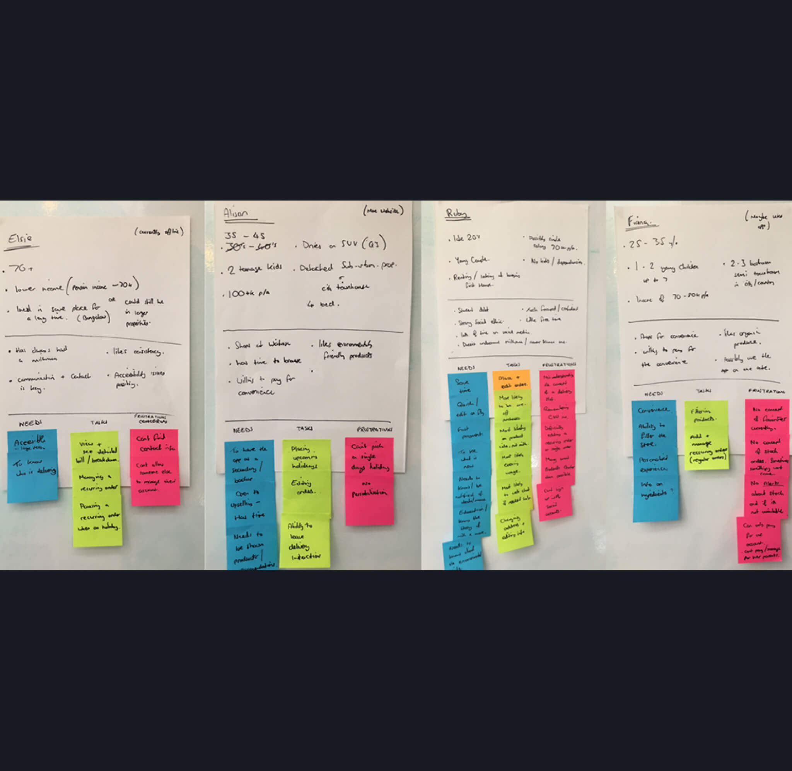
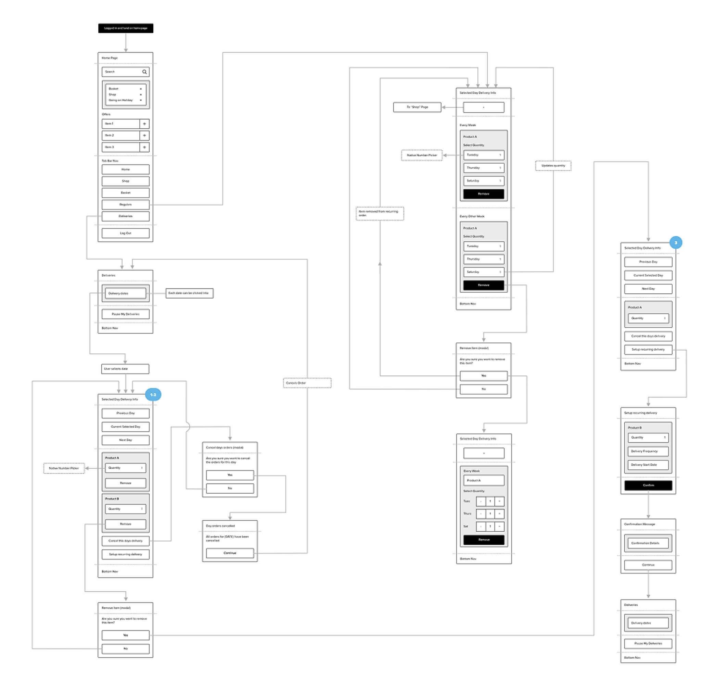
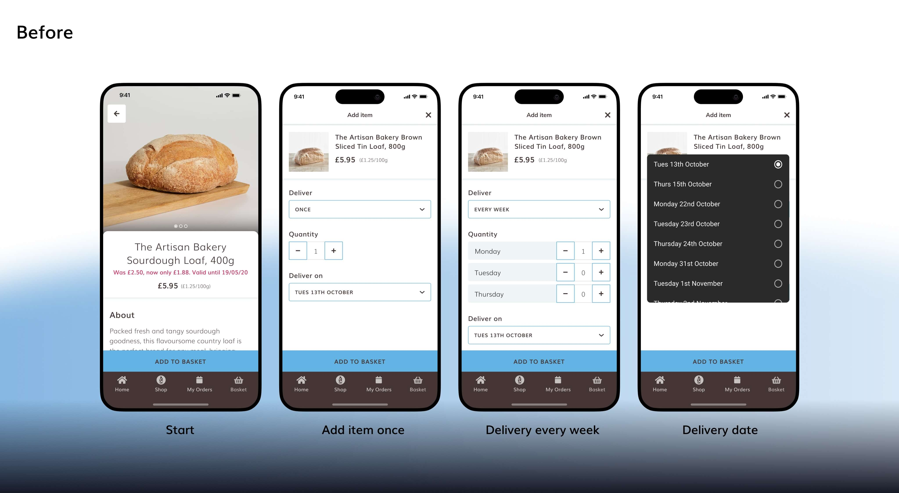
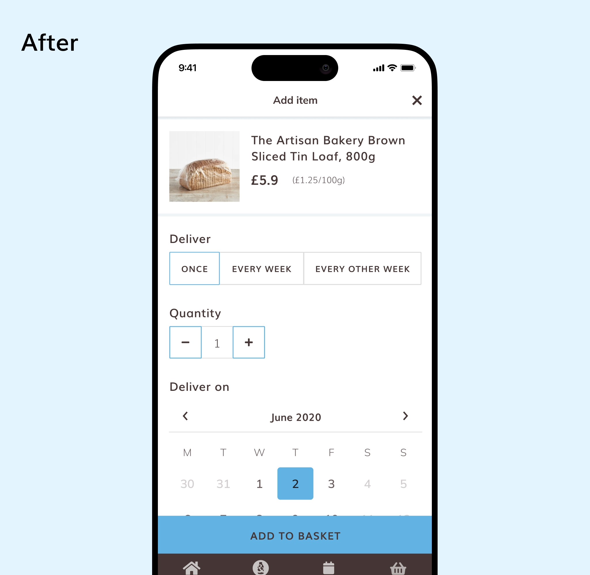
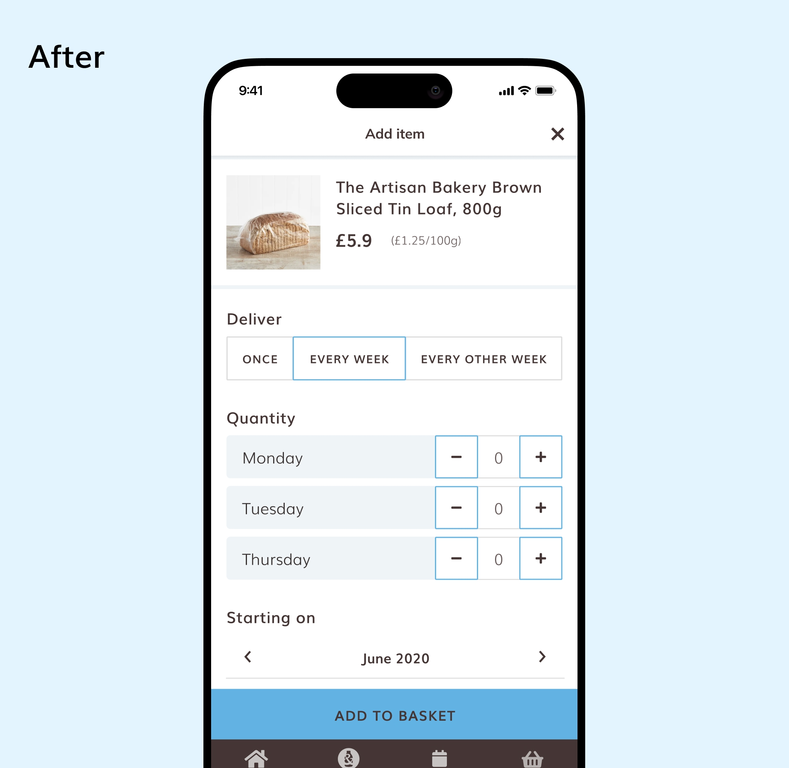
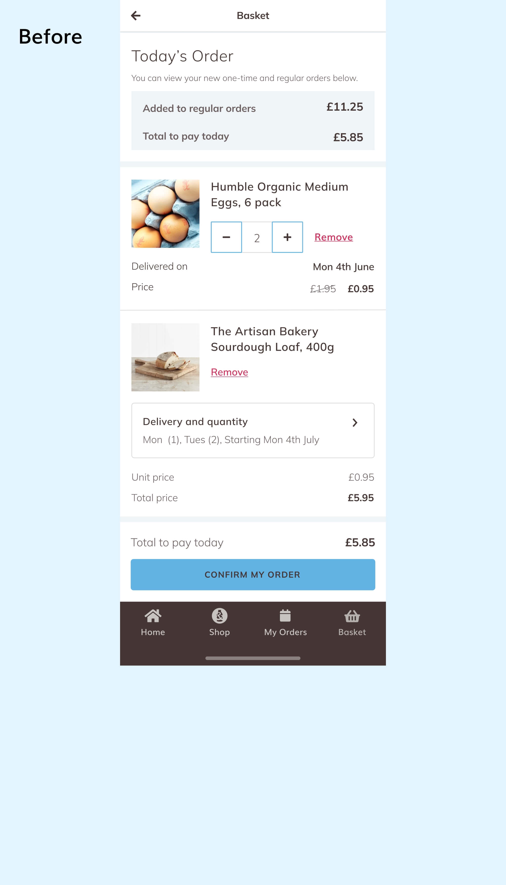
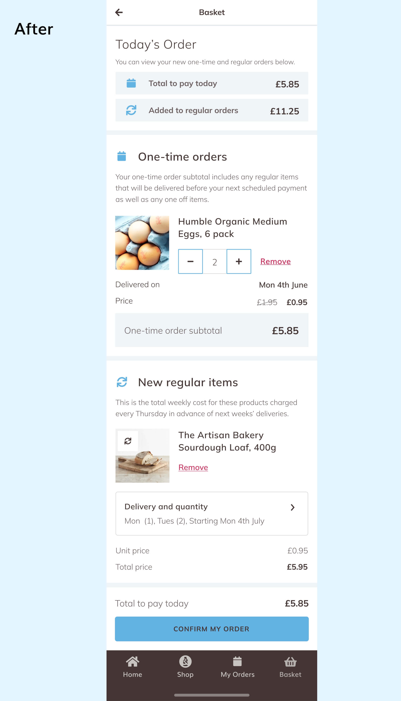
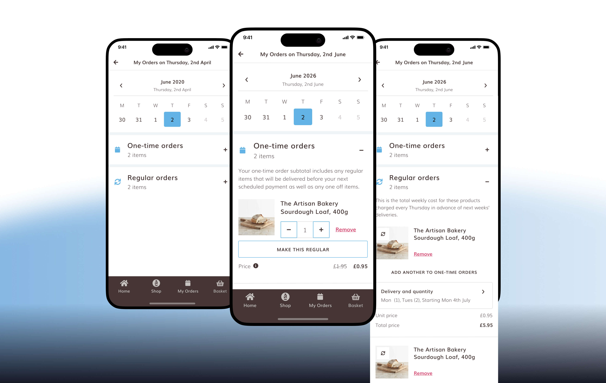

Rebuilding the Milk & More App
Milk & More is a popular UK grocery delivery service where friendly neighbourhood milkmen deliver orders, either as one-offs or as subscriptions. Its app needed a redesign, so I led one across every screen and flow, using discovery to find the two biggest problems, in onboarding and ordering.
Product Designer (me), Product Manager, Engineers (6)
Figma, Mixpanel, Lyssna
6 months

89% → 74%
Sign-up abandonment
77% → 69%
Cart abandonment
-23%
Subscription-related support tickets

New onboarding

New order flow
Discovery
I led discovery from the start. I facilitated a workshop with the client, engineers and project managers, documented the service, and mapped the user flow. I built personas from the stakeholder interviews to pin down user needs, behaviours and pain points, and audited other UK grocery apps on onboarding, login, basket setup, delivery dates and repeat schedules. I then checked all of it against Mixpanel data, screen recordings, App Store reviews and support tickets. Two frictions stood out, onboarding and ordering, and I cover the evidence for each in its own section below.

Personas

User flow
The Redesign: Every Screen and Flow
I redesigned the whole app, not just the screens that made the headlines. The redesign added onboarding, fixed the order flow, and introduced new flows for viewing and amending orders. I built a design system in Figma, with components and tokens, so the new app stayed consistent and the engineers could build from a single source. I handed over with a prototype, documentation and walkthrough meetings.
Beyond the big flows, discovery turned up everyday problems that made the app feel unreliable, and I fixed each one:
- Clear feedback: screen recordings showed users adding items twice or opening the basket to check, so I added confirmation messages such as “Added to your basket”
- Forgiving of mistakes: App Store reviews called out having to refill information after an error or pressing back, so neither clears what users have entered any more
- Faster searching: because so many users would search, I made the search bar sticky
- Better product pages: visual hierarchy added to the product details, and related products to keep people browsing
- Easier to tap: clickable elements resized to proper touch targets
- Familiar controls: native pickers used wherever possible

New sign-up flow
1. Onboarding: Show Value Before commitment

Wireframe

Amended user flow
Problem: Users hit an account wall before they could tell whether the service even reached their area, and 89% dropped out on the registration screen before seeing any products.

Immediate postcode lookup

New Login

Browse first, register at purchase intent
What discovery showed:
- Users only learned whether we covered their postcode after a 2–3 minute sign-up, so people outside the delivery area built accounts they could never use
- App Store reviews and support tickets raised the same frustration
- Screen recordings showed users opening the form, reviewing it and leaving, and strict password rules added friction
- The service’s key benefits weren’t communicated early enough, so users had little reason or trust to sign up

We don't deliver to your area

We deliver to you
What I did:
- Moved the postcode check to the first screen, with no account needed
- Made the app browse-first, asking users to register only when they go to purchase
- Added a benefits carousel, plus a local milkman profile and delivery schedule to build trust (or a waitlist outside the area)
- Split registration into shorter steps with clearer password feedback
Testing: Eight Lyssna testers per round showed that my password animation confused people, so I replaced it with simpler feedback. They also showed that delivery days needed to be explicit.

Clearer password feedback

Explicit delivery schedule
Result: Sign-up abandonment fell from 89% to 74% over three months, and users now confirm coverage in under 10 seconds.
2. Ordering: Clarity One-Off vs Repeat
Problem: A select box defaulted to “one-off” and hid the repeat option, so users ordered in the wrong format and dropped out during the order process.

Recreation of original UX with my update UI for testing against new.
What discovery showed:
- 19% of order-related support tickets were about unintended orders in the wrong format, and staff were manually switching orders for customers
- App Store reviews raised the same issue
- Screen recordings showed hesitation and back-and-forth, and long delays selecting a date
The manual order switching was a separate problem from the confusion at the point of ordering. I kept it out of this work to stay focused, and addressed it in the new My Orders flows.
What I did:
- Replaced the select box with a visible toggle
- Changed the date field to show when an order repeats
- Grouped one-off and repeating items in the basket with headings, icons and helper text

New: One-off order

New: Repeated order

Before: Basket

After: Basket
Testing: In round 1, 2 of 8 testers skipped the calendar date step. I replaced the calendar with a plain-English button (“Starting on: Tues 13th October”) and round 2 went smoothly. Testers also misread “bi-weekly”, so I changed it to “Every 2 weeks” and highlighted repeating dates on the calendar. In the basket first-click test, 8 of 8 testers removed repeating items correctly. The testing was qualitative, helping me find points of confusion rather than statistically validating the design.
Result: Cart abandonment fell from 77% to 69% over three months, measured in Mixpanel, and subscription-related support tickets fell 23%. The same thinking shaped the new flow for browsing and editing orders (preview below).

New flow for My Orders
What I Learnt
- Discovery decides where design effort goes. Finding the problems first meant the new app fixed the real ones, including small UX decisions like a hidden dropdown.
- Timing matters as much as design. Asking for registration after users have seen value worked better than any form redesign.
- My first fix isn’t always enough. Testing caught the calendar issue that my first solution missed.